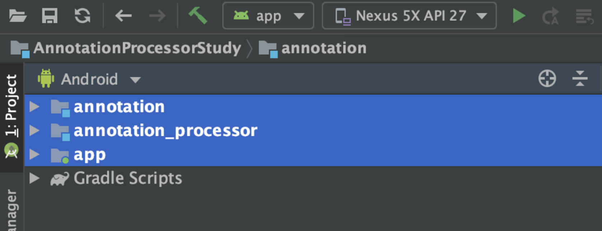
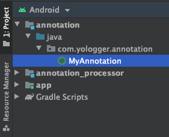
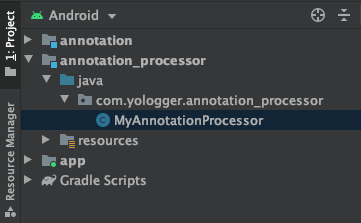
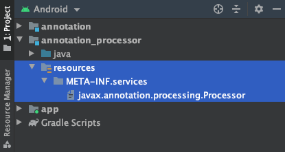
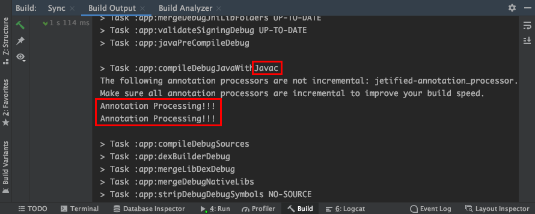

[Java] 어노테이션 프로세서(Annotation Processor)
어노테이션은 어떻게 처리되는가?
다음 예제를 살펴보자
1 | int sum( int a, int b) { |
어노테이션 @IntRange를 통해 데이터 유효성을 검증하고있다. 그렇다면 실제로 유효성을 검사하는 코드는 어디에 존재할까? 이를 이해하기 위해서는 어노테이션 프로세서에 대해 알아야한다.
어노테이션 프로세싱
어노테이션 프로세싱은 자바 컴파일러가 컴파일 단계에서 어노테이션을 분석하고 처리하는 기법이다.
자바 컴파일러는 자바 소스코드를 자바 바이트코드로 변환한다. 이때 어노테이션 프로세서(Annotation Processor)를 플러그인 형태로 자바 컴파일러에 등록하면 어노테이션을 처리하게 된다.
자바 컴파일러와 어노테이션 프로세서
자바 컴파일러는 등록된 어노테이션 프로세서가 모두 처리될 때까지 반복하여 실행한다. 이 때 어노테이션 프로세서에 구현된 로직에 따라 경고나 에러를 발생시키기도, 추가적인 자바코드를 추가하기도 한다. 자바 컴파일러는 이렇게 최종적으로 완성된 자바 소스코드를 자바 바이트코드로 변환한다.
설정
사용하는 IDE에 따라 어노테이션 프로세서를 등록하는 방법이 다르다. 이 포스트에서는 Android Studio를 기준으로 설명한다.
우선 다음과 같이 새로운 프로젝트를 생성하고 세 개의 모듈을 생성한다.

각 모듈에 의존성을 추가한다.
- groovy
1 | implementation project(':annotation') |
- groovy
1 | dependencies { |
어노테이션 만들기
설정이 끝났다면 annotation모듈에 MyAnnotation.java파일을 생성한다.

1 | package com.yologger.annotation; |
어노테이션 프로세서 만들기
annotation_processor모듈에 다음과 같이 MyAnnotation.java파일을 생성하자.

어노테이션을 프로세서를 구현할 땐 AbstractProcessor를 상속해야한다. 또한 process()메소드를 구현해야한다. 이 메소드 안에서 실제로 어노테이션 처리를 하게된다.
1 | public class MyAnnotationProcessor extends AbstractProcessor { |
어노테이션을 사용하면 “Annotation Processing!!!”를 출력하도록 코드를 작성해보자.
1 | public class MyAnnotationProcessor extends AbstractProcessor { |
init(): 파일을 생성하기 위해 필요한 FileWriter, 디버깅에 필요한 Messager 등 각종 유틸리티 클래스들을 이 곳에서 사용할 수 있다.process(): 프로세서의 핵심 부분이다. 이곳에서 클래스, 메소드, 필드 등에 추가한 어노테이션을 처리하고 처리에 대한 결과로 자바 파일을 생성할 수 있다.getSupportedAnnotationType(): 어떤 어노테이션들을 처리할 지집합(Set)형태로 리턴하게 된다.getSupportedSourceVersion(): 일반적으로 최신의 Java 버전을 리턴한다.
어노테이션 프로세서 등록하기
어노테이션 프로세서를 구현했다면 자바 컴파일러가 사용할 수 있도록 등록해야한다.
annotation_processor모듈에 다음과 같이 폴더를 생성한다.
1 | annotation_processor/src/main/resources/META-INF/services |
그 다음 파일을 하나 생성한다. 파일명은 반드시 다음과 같아야한다.
1 | javax.annotation.processing.Processor |

이제 파일을 열어 위에서 작성한 어노테이션 프로세서를 등록하자. 이때 반드시 프로젝트의 패키지명을 포함해서 작성해야한다.
1 | com.yologger.annotation_processor.MyAnnotationProcessor |
이제 app모듈을 빌드해보자. 어노테이션 프로세서가 정상적으로 작동되었다면, 다음과 같은 로그를 확인할 수 있다.

auto-service 라이브러리
구글의 auto-service 라이브러리를 사용하면 위의 번거로운 등록 과정없이 자동으로 어노테이션 프로세서를 컴파일러에 등록해준다.
annotation_processeor모듈에 다음과 같이 auto-service 라이브러리 의존성을 추가한다.
- groovy
1 | dependencies { |
그 다음 어노테이션 프로세서 클래스에 다음과 같이 @AutoService(Processor.class)어노테이션을 추가하자.
1 |
|
이제 app모듈을 다시 빌드하면 어노테이션 프로세서가 자동으로 등록되고 동작한다.